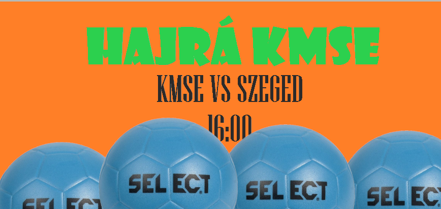
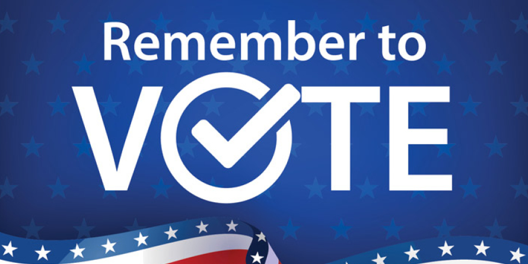
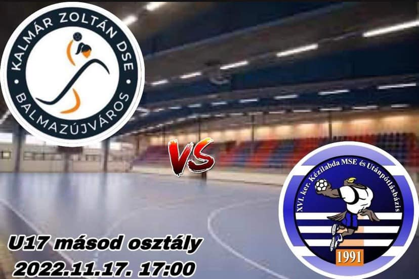

LU. II. OSZTÁLY- KELET 16:00-TÓL ÉLŐBEN JÁTSZÁK A CSÖMÖRI SPORTCSARNOKBAN KMSE VS K. SZEGED SE
A RENDSZER FOLYAMATOSAN FRISSÜL
CSAPATTAL KAPCSOLATOS HÍREK

HAJRÁ KMSE A MÉRKŐZÉS ÉLŐBEN A CSÖMÖRI SPORTCSARNOKBAN A STATISZTIKÁKAT NÉZD ÉLŐBEN!

AZ EMBEREK A LEGJOBB JÁTÉKOSNAK IVÁNKA LIZA EMMÁT VÁLASZTOTTÁK, DE A MÉRKŐZÉST AZ EMBEREK 0%-BAN ÉLVEZTÉK. SZAVAZ, HOGY KI VOLT MOST A LEGJOBB!

KÖVESD ÉLŐBEN A KALMÁR ZOLTÁN ÁLTALÁNOS ISKOLA DSE ELLENI MÉRKŐZÉST AZ MKSZ OLDALÁRÓL, VAGY LUCÁVAL A DISCORD SZERVERÜNKRŐL. A MÉRKŐZÉSNEK VÉGE
KÖVESD ÉLŐBEN A HÓDMEZŐVÁSÁRHELY ELLENI MÉRKŐZÉST 10:30-TÓL A KÉZI SZÖVETSÉG HONLAPJÁRÓL ÉS A DISCORD FANSZERVERÜNKRŐL! A MÉRKŐZÉSNEK VÉGE
GRATÁLUNK LILLA, A KIEMELKEDŐ EREDMÉNYÉHEZ! JELENLEG NEKI VAN AZ LU17 II. OSZTÁLY-KELET VERSENYZŐI KÖZÜL AZ 5. LEGJOBB STATISZTIKÁJA. A HILDA SE SZOMORKODJON, MIVEL Ő A 33.